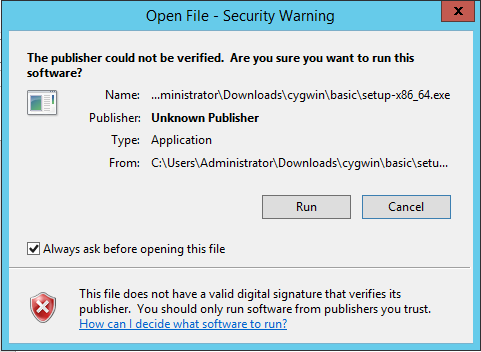
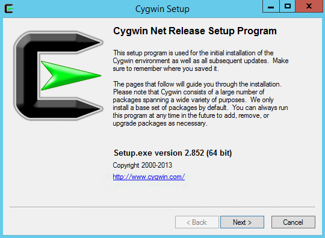
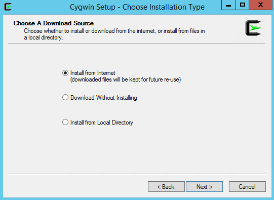
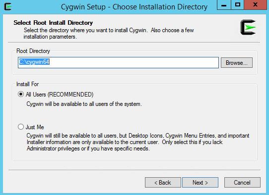
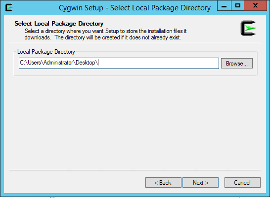
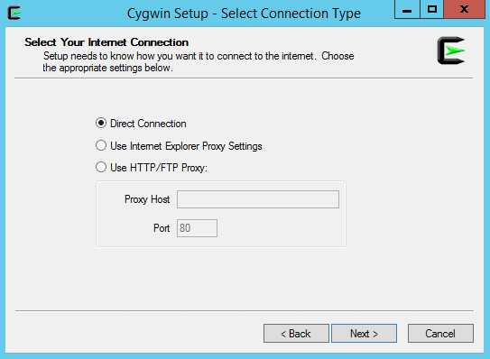
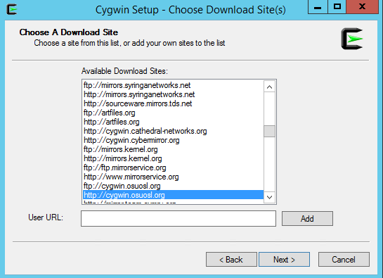
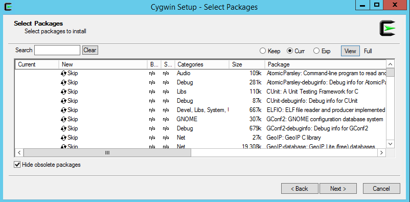
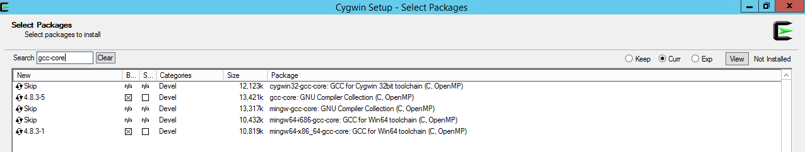

The Cygwin toolkit provides Unix tools on the Windows platform. You need only install the Cygwin toolkit if you are rebuilding from source under Windows and intend to develop your own actors using Java using third party Java packages.
Rather than installing Cygwin, it may be easier to follow the
Eclipse
instructions and use the
$PTII/.classpath.default.
Under Windows, the reason to install the Cygwin toolkit is so
that ./configure may be run and packages like Java
3D found in your environment.
The $PTII/.classpath.default file refers only to
resources included in the Ptolemy II download and does not refer
to other packages such as Java 3D for Windows. Eclipse users
who are using third party packages will need configure the
Eclipse build path by hand.
Note that compile your own actors, you will also need the
javac compiler. The javac compiler
is part of the JDK, which is available at:
http://www.oracle.com/technetwork/java/javase/downloads/index.html.
The javac compiler is not present in the
Java Runtime Environment (JRE)
The Cygwin home page is at
http://sources.redhat.com/cygwin/
Complete installation instructions can be found at
http://sources.redhat.com/cygwin/faq.
Compiling the Ptolemy II Matlab interface and Java Native Interface (JNI) actor requires that the a C compiler be installed. The Matlab interface requires that Matlab be installed on the local machine.
Under Windows, to build the Matlab interface, you must use MinGW from http://www.mingw.org.



C:\cygwin64 and Install for All Users, click Next.





gcc-core has been entered in to the Search window and two packages have been selected.

c:/cygwin64/etc/passwd is created during the
Cygwin installation. If your Windows account is a domain account
and not a local account, then you may need to add an entry
to c:/cygwin64/etc/passwd by hand.
mkpasswd command to append
a line with your login information, for example, user "cxh" used:
mkpasswd -l > /etc/passwd mkpasswd -d -u cxh --path-to-home=/cygdrive/c/users >> /etc/passwd
mkpasswd -h will print out help for the mkpasswd
command$PTII/bin/vergil may fail:
$ export PTII=c:/user/ptII $ $PTII/bin/vergil c:/user/ptII/bin/vergil: line 30: $'\r': command not found c:/user/ptII/bin/vergil: line 40: $'\r': command not found c:/user/ptII/bin/vergil: line 43: $'\r': command not found c:/user/ptII/bin/vergil: line 48: $'\r': command not found c:/user/ptII/bin/vergil: line 67: syntax error near unexpected token `$'in\r'' ':/user/ptII/bin/vergil: line 67: ` case "`uname -s`" in
Another possible solution is to create a ~/.bash_profile that contains
export SHELLOPTS set -o igncrTo find your home directory, start up Cygwin bash and type
cd;pwd. Then use an editor like Wordpad.
See also:
http://cygwin.com/ml/cygwin-announce/2006-12/msg00026.html
- The 2006 Cygwin announcement that covers this.http://comments.gmane.org/gmane.os.cygwin/115453
- discussion about the issue.http://cygwin.com/cygwin-ug-net/using.html#using-pathnames
- info about why paths like c:/ do not use /etc/fstab.http://cygwin.com/cygwin-ug-net/using.html#mount-table
- Cygwin manual for /etc/fstab.Another possibility is to use perl to convert the \r\n characters to \n:
perl -i -pne "s/\r\n/\n/g" configure
PTII environment variable sectionThe default gcc compiler shipped with Cygwin will produce .dll files that do not work properly. The solution is to install Mingw.
mkdir c:/mingw cd c:/mingw
bash mingwdl.sh
gunzip *.gz
lzma -d *.lzma
#!/bin/sh tars=`ls *.tar` for tar in $tars do echo $tar tar -xf $tar done
bash mingwuntar.sh
You may need to enable copy and paste in the bash shell window.
If copy and paste are working properly, then you should be able to highlight text by left clicking and dragging the mouse over the text and then hitting the Enter key to copy the highlighted text.
The Cygwin faq at
https://www.cygwin.com/faq/faq.html#faq.using.copy-and-paste
says:
How can I copy and paste into Cygwin console windows?
First, consider using mintty instead of the standard console window. In mintty, selecting with the left-mouse also copies, and middle-mouse pastes. It couldn't be easier!
In Windows's console window, open the properties dialog. The options contain a toggle button, named "Quick edit mode". It must be ON. Save the properties.
You can also bind the insert key to paste from the clipboard by adding the following line to your .inputrc file:
"\e[2~": paste-from-clipboard